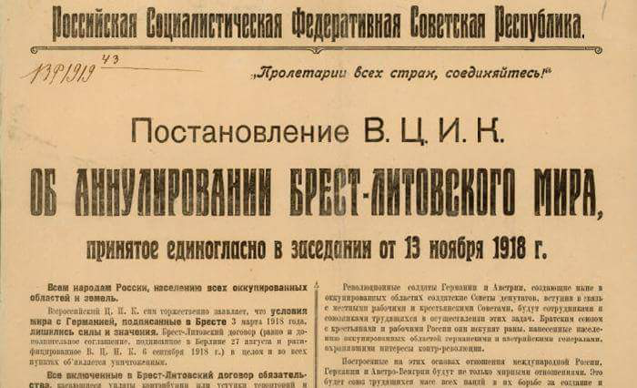

Аннулирование "Брестского мира"
13 ноября, 23:43

Аннулирование "Брестского мира"
98 лет назад, 13 ноября 1918 года, Советское правительство торжественно объявило об аннулировании грабительского Брестского мирного договора.
Тем не менее, как ни тяжёл и унизителен был Брестский мир, который сам Ленин называл "похабным", он всё же дал молодой Советской республике передышку, возможность приступить к социалистическому строительству и накопить новые силы для грядущих битв. Окрепнув и вооружившись, Советская власть отбила все атаки внутренней и внешней контрреволюции. Изменившаяся международная обстановка, поражение Германии в первой мировой войне, позволила отказаться от навязанных Советскому правительству грабительских условий договора.
ВСЕРОССИЙСКИЙ ЦЕНТРАЛЬНЫЙ ИСПОЛНИТЕЛЬНЫЙ КОМИТЕТ
ДЕКРЕТ
от 13 ноября 1918 года
ОБ АННУЛИРОВАНИИ БРЕСТСКОГО ДОГОВОРА
Всем народам России, населению всех оккупированных областей и земель.
Всероссийский Центральный Исполнительный Комитет Советов всем торжественно заявляет, что условия мира с Германией, подписанные в Бресте 3 марта 1918 года, лишились силы и значения. Брест-Литовский договор (равно и дополнительное соглашение, подписанное в Берлине 27 августа и ратифицированное Всероссийским Центральным Исполнительным Комитетом 6 сентября 1918 г.) в целом и во всех пунктах объявляется уничтоженным. Все включенные в Брест-Литовский договор обязательства, касающиеся уплаты контрибуции или уступки территории и областей, объявляются недействительными.
Последним актом правительства Вильгельма, вынудившего этот насильнический мир в целях ослабления и постепенного ухудшения Российской Социалистической Федеративной Советской Республики и ничем не ограниченной эксплоатации окружающих Республику народов, была высылка Советского посольства из Берлина за его деятельность, направленную к ниспровержению буржуазно-императорского режима в Германии. Первым актом восставших рабочих и солдат в Германии, низвергнувших императорский режим, был призыв посольства Советской Республики.
Брест-Литовский мир насилия и грабежа пал таким образом под соединенным ударом германских и русских пролетариев-революционеров.
Трудящиеся массы России, Лифляндии, Эстляндии, Польши, Литвы, Украины, Финляндии, Крыма и Кавказа, освобожденные германской революцией от гнета грабительского договора, продиктованного германской военщиной, призваны ныне сами решать свою судьбу. На место империалистического мира должен притти социалистический мир, заключенный освободившимися от гнета империалистов трудящимися массами народов России, Германии и Австро-Венгрии. Российская Социалистическая Федеративная Советская Республика предлагает братским народам Германии и бывшей Австро-Венгрии, в лице их Советов рабочих и солдатских депутатов, немедленно приступить к урегулированию вопросов, связанных с уничтожением Брестского договора. В основу истинного мира народов могут лечь только те принципы, которые соответствуют братским отношениям между трудящимися всех стран и наций и которые были провозглашены Октябрьской революцией и отстаивались русской делегацией в Бресте. Все оккупированные области России будут очищены. Право на самоопределение в полной мере будет признано за трудящимися нациями всех народов. Все убытки будут возложены на истинных виновников войны, на буржуазные классы.
Революционные солдаты Германии и Австрии, создающие ныне в оккупированных областях солдатские Советы депутатов, вступив в связь с местными рабочими и крестьянскими Советами, будут сотрудниками и союзниками трудящихся в осуществлении этих задач.
Братским союзом с крестьянами и рабочими России они искупят раны, нанесенные населению оккупированных областей германскими и австрийскими генералами, охранявшими интересы контр-революции.
Построенные на этих основах международные отношения России, Германии и Австро-Венгрии будут не только мирными отношениями. Это будет союз трудящихся масс всех наций, в их борьбе за создание и укрепление социалистического строя на развалинах строя милитаризма и экономического рабства. Этот союз трудящиеся массы России, в лице Советского Правительства, предлагают народам Германии и Австро-Венгрии. Они надеются, что к этому могущественному союзу освободившихся народов России, Польши, Финляндии, Украины, Литвы, Прибалтики, Крыма, Кавказа, Германии и Австро-Венгрии примкнут народы всех остальных стран, еще не сбросивших иго империализма. Впредь же до этого момента, этот союз народов будет сопротивляться всякой попытке навязать народам капиталистический гнет чужеземной буржуазии. Освобожденные германской революцией от ига германского империализма народы России тем менее согласятся подчиниться игу империализма англо-американского или японского.
Правительство Советской Республики предложило всем державам, ведущим с ними войну, мирное соглашение. Впредь же до того момента, когда трудящиеся массы этих держав заставят свои правительства принять мир с рабочими, крестьянами и солдатами России, правительство Республики будет, опираясь ныне на революционные силы всей средней и восточной Европы, сопротивляться попыткам вновь вернуть Россию под иго рабства чужеземному и туземному капиталу. Приветствуя население всех областей, освобожденных от ига германского империализма, Российская Социалистическая Федеративная Советская Республика зовет трудящиеся массы этих областей к братскому союзу с рабочими и крестьянами России и обещает им полную, до конца идущую поддержку в их борьбе за установление на их землях социалистической власти рабочих и крестьян.
Насильнический мир в Брест-Литовске уничтожен. Да здравствует истинный мир и мировой союз трудящихся всех стран и наций.
Председатель
Всероссийского Центрального
Исполнительного Комитета Советов
Я.СВЕРДЛОВ
Секретарь
Всероссийского Центрального
Исполнительного Комитета Советов
В.АВАНЕСОВ
За материал спасибо товарищу.
http://itsitizen.livejournal.com/469658.html - цинк